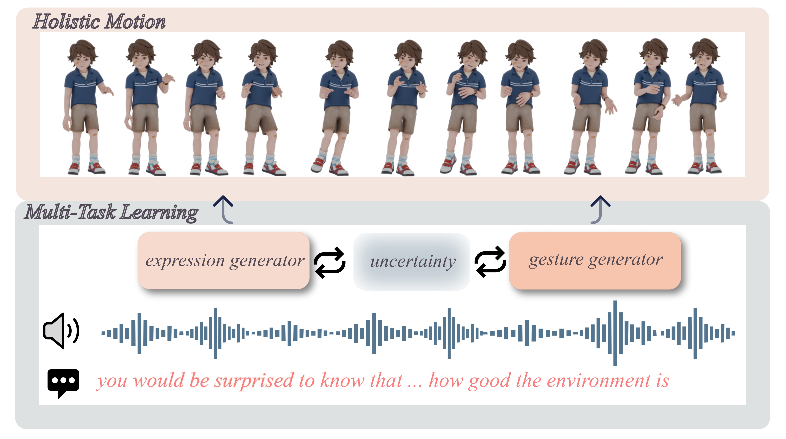

Speech-driven holistic motion generation requires synchronized facial expressions and diverse gestures for lifelike virtual agents. Existing methods struggle to correctly model the complex relationships between gestures and facial expressions, often relying on fixed weighting schemes or predefined inter-task constraints that fail to capture their optimal interactions.
We introduce AdaptiveDiffuseMotion, a novel diffusion-based framework that adaptively balances deterministic facial expression synthesis and non-deterministic gesture generation through uncertainty-based multi-task learning. Our approach dynamically adjusts loss weights without manual tuning, achieving superior synchronization and diversity simultaneously.
Experimental results demonstrate significant improvements in facial precision, gesture diversity, and overall realism across multiple metrics and user studies.